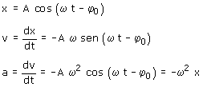

a) Aunque la ecuación parezca extraña, el movimiento de la partícula es armónico. Para comprobarlo calculamos la aceleración:  Como la aceleración es proporcional y contraria a la posición, el movimiento es armónico. Evidentemente la amplitud del movimiento es 0.4 m, la frecuencia angular vale 0.7 rad/s y por tanto el período será T = 2π/0.7 = 8.98 s |